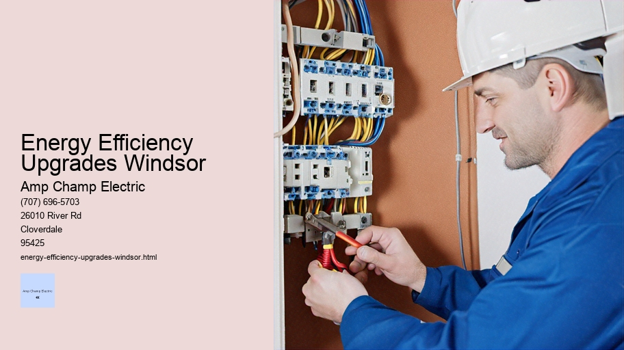

News
Electrical Installation Healdsburg
Electrical Installation Healdsburg
Electrical Installation Santa Rosa
Electrical Installation Cloverdale
Electrical Installation Geyserville
Electrical Installation Windsor
Maintenance and Repair Services Healdsburg
Maintenance and Repair Services Healdsburg
Maintenance and Repair Services Santa Rosa
Maintenance and Repair Services Cloverdale
Maintenance and Repair Services Geyserville
Maintenance and Repair Services Windsor
Electrical Safety Inspections Healdsburg
Electrical Safety Inspections Healdsburg
Electrical Safety Inspections Santa Rosa
Electrical Safety Inspections Cloverdale
Electrical Safety Inspections Geyserville
Electrical Safety Inspections Windsor
Energy Efficiency Upgrades Healdsburg
Energy Efficiency Upgrades Healdsburg
Energy Efficiency Upgrades Santa Rosa
Energy Efficiency Upgrades Cloverdale
Energy Efficiency Upgrades Geyserville
Energy Efficiency Upgrades Windsor
Specialty Electrical Services Healdsburg
Specialty Electrical Services Healdsburg
Specialty Electrical Services Santa Rosa
Specialty Electrical Services Cloverdale
Specialty Electrical Services Geyserville
Specialty Electrical Services Windsor
About Us
Contact Us

Energy Efficiency Upgrades Windsor
Ceiling Fan Installation
Energy Efficiency Upgrades: The Path to a Sustainable Future
In the contemporary world, energy efficiency upgrades have emerged as a pivotal aspect of combating climate change, reducing utility bills, and promoting sustainable living. These improvements are designed to optimize the way we consume energy within our homes, offices, industries, and wider communities. Such upgrades not only have a positive impact on the environment but also provide economic benefits and enhance quality of life.
The importance of energy efficiency cannot be overstated in an age where resources are finite and environmental concerns are escalating. Traditional modes of energy production often rely on fossil fuels which contribute to greenhouse gas emissions, leading to global warming and adverse effects on ecosystems.
Electrical Installation
Energy efficiency upgrades serve as a countermeasure by diminishing the demand for energy generated from these non-renewable sources.
At the heart of these upgrades is the principle that it is more economical to save energy than to produce it. Simple changes such as retrofitting buildings with better insulation can significantly reduce heating and cooling demands – this is one of the most cost-effective measures available. Similarly, replacing old appliances with newer models that bear the ENERGY STAR label ensures lower electricity consumption without compromising performance.
Lighting offers another avenue for substantial gains in energy efficiency. The transition from incandescent bulbs to compact fluorescent lamps (CFLs) or light-emitting diodes (LEDs) has already led to remarkable reductions in power usage across many sectors. These technologies use up to 80% less energy than traditional bulbs and last considerably longer, making them an investment that pays off over time.
Beyond individual components like insulation or lighting fixtures lies the realm of smart technology – programmable thermostats, intelligent power strips, and home management systems that allow users greater control over their consumption patterns. These high-tech solutions can adjust settings based on real-time data or predefined preferences to ensure optimal use of energy at all times.
On a larger scale, industrial processes have been refined through advanced motors, pumps, and manufacturing techniques that prioritize efficiency. In certain industries like automotive manufacturing or food processing, heat recovery systems capture waste heat for reuse thus further reducing reliance on external power sources.
The transportation sector has also seen innovative strides with hybrid vehicles becoming mainstream and electric cars gaining popularity due to their negligible emissions during operation compared to internal combustion engines.
For building owners considering an upgrade project or new construction alike there exists a variety of incentive programs offered by governments worldwide aimed at encouraging adoption of eco-friendly practices including tax credits rebates low-interest loans even grants tailored specifically toward small businesses homeowners looking invest long-term sustainability efforts while simultaneously cutting down costs associated upkeep existing structures facilities equipment infrastructure etcetera
Moreover educating individuals about potential savings gains alongside broader societal benefits stemming adopting green technologies crucial ensuring continued progress field enhancements continue permeate various aspects daily life ranging residential commercial industrial public arenas alike
In conclusion embracing path laid out via proactive implementation widespread application comprehensive suite available options pertaining realm stands testament collective effort geared towards securing cleaner healthier prosperous future generations come Moving forwards critical stay informed make decisions reflect growing awareness interconnectedness between economic stability ecological balance Together incremental steps taken today lay foundation resilient tomorrow where thrives harmony natural surroundings
Ultimately journey towards enhanced planetary stewardship starts locally with each person choosing partake transformative experience embodies true spirit innovation perseverance hope
LED Lighting Upgrades and Retrofits: Illuminating the Path to Energy Efficiency
In the pursuit of energy efficiency and sustainability, LED lighting upgrades and retrofits stand out as a beacon of progress in modern energy solutions. The transition from traditional incandescent and fluorescent lights to Light Emitting Diode (LED) technology represents more than just an upgrade in lighting; it signifies an evolution in our approach to environmental responsibility, cost savings, and enhanced lighting quality.
The genesis of LED technology dates back over half a century, but it is only in recent years that LEDs have come to dominate the lighting market. LEDs offer numerous advantages over their predecessors. They consume significantly less power, boast longer lifespans, emit lower heat levels, provide instant light without warm-up times, and do not contain hazardous materials like mercury found in compact fluorescents.
One might ask what exactly entails an LED retrofit or upgrade. Simply put, it involves replacing outdated lighting fixtures or bulbs with new LED alternatives. This can range from straightforward bulb replacements to more comprehensive changes involving new fixtures designed specifically for LED use. These changes are implemented across commercial buildings, industrial settings, public spaces, and residential areas alike.
Energy Efficiency Upgrades Windsor - Electrical Installation
National Electrical Code (NEC)
Electrical Panel Upgrade
Electrical Installation
Energy Management Systems
Electrical Safety Equipment
The financial incentives for undertaking an LED retrofit are compelling. Although the initial investment may be higher compared to traditional light sources, the long-term savings are substantial due to LEDs' lower energy consumption and reduced maintenance costs associated with their longer lifespan—often up to 25 times longer than incandescent bulbs.
Beyond economics lies the environmental impact of this shift towards LED technology. As global awareness of climate change intensifies, LED retrofits emerge as practical steps toward reducing carbon footprints since they demand less power from electricity grids predominantly powered by fossil fuels. Moreover, because they last longer than conventional bulbs, there is a marked decrease in waste production.
Lighting quality is another front where LEDs shine brightly. They offer superior color rendering indices (CRI), which means colors appear more vibrant and true-to-life under their glow—a feature particularly beneficial in retail environments where visual merchandising is key. Additionally, LEDs provide greater control over light intensity and directionality which can enhance ambiance and functionality within a space.
Despite these benefits being widely acknowledged today's marketplace still presents challenges when it comes to implementing LED retrofits on a broad scale. One such challenge includes overcoming the inertia inherent in replacing functioning yet inefficient systems—the "if it isn't broken don't fix it" mentality—which can delay adoption despite potential savings.
Another obstacle may be misinformation or lack of knowledge about available options among consumers who must navigate through myriad products with varying specifications such as luminosity levels (lumens), color temperatures (measured in Kelvin), dimmability features among others factors that determine suitability for different applications.
However these hurdles are surmountable as demonstrated by thriving industries dedicated solely towards providing tailored solutions for all manner of lighting needs—from small-scale residential projects large-scale commercial ventures governmental initiatives aimed at infrastructure improvements—all testament continual strides being made field illumination technologies especially regard advancements surrounding use adoption widespread application LEDs throughout diverse sectors society.
In conclusion embracing change through implementation upgraded retrofitted systems utilizing cutting-edge offers multitude benefits transcending mere economic gain encompassing broader themes resource conservation stewardship planet we inhabit Furthermore stands testament human ingenuity ability innovate solve pressing issues day time ushering era enlightened energy consumption holds promise brighter future both metaphorically literally As move forward continuous improvement education advocacy will remain crucial ensuring full potential realized transforming way world lit one bulb time
Specialty Electrical Services Healdsburg
electrical-installation-healdsburg.html
electrical-installation-santa-rosa.html
electrical-installation-cloverdale.html
electrical-installation-geyserville.html
electrical-installation-windsor.html
maintenance-and-repair-services-healdsburg.html
maintenance-and-repair-services-santa-rosa.html
maintenance-and-repair-services-cloverdale.html
maintenance-and-repair-services-geyserville.html
maintenance-and-repair-services-windsor.html
electrical-safety-inspections-healdsburg.html
electrical-safety-inspections-santa-rosa.html
electrical-safety-inspections-cloverdale.html
electrical-safety-inspections-geyserville.html
electrical-safety-inspections-windsor.html
energy-efficiency-upgrades-healdsburg.html
energy-efficiency-upgrades-santa-rosa.html
energy-efficiency-upgrades-cloverdale.html
energy-efficiency-upgrades-geyserville.html
energy-efficiency-upgrades-windsor.html
specialty-electrical-services-healdsburg.html
specialty-electrical-services-santa-rosa.html
specialty-electrical-services-cloverdale.html
specialty-electrical-services-geyserville.html
specialty-electrical-services-windsor.html
privacy-policy.html
sitemap.html
sitemap.xml
about-us.html
feed.xml
Energyefficient appliance installation
Title: Embracing Energy-Efficient Appliance Installation for a Sustainable Future
In the contemporary world, where resources are dwindling and our environmental footprint is expanding, it has become imperative to adopt sustainable practices in all walks of life. One significant stride toward this goal is through the installation of energy-efficient appliances in our homes and workplaces. The surge in energy consumption and its consequent impact on climate change calls for immediate action, where each household can play a pivotal role by incorporating appliances that not only reduce utility bills but also contribute to the conservation of the environment.
Energy Management Systems
The concept of energy-efficient appliance installation is rooted in using modern technology to deliver the same or improved functionality while consuming less energy compared to traditional models. This practice spans across various devices such as refrigerators, washing machines, air conditioners, heaters, and even small kitchen gadgets. It embodies a thoughtful approach towards everyday living that harmonizes economic savings with ecological mindfulness.
One might wonder about the tangible benefits these installations bring forth. From an individual perspective, energy-efficient appliances translate into considerable cost savings over time due to their reduced power consumption. Although they may have a higher initial purchase price than conventional options, their operational costs are significantly lower—this means that the investment pays off in the long term through consistent reductions on electricity bills.
Beyond personal financial gains, there's an extensive array of advantages at the global level. By reducing energy demand, we alleviate pressure on power grids and diminish reliance on fossil fuels—the primary culprits behind greenhouse gas emissions contributing to global warming. Thus, opting for efficient appliances is akin to casting a vote for cleaner air and water, healthier ecosystems, and overall climate stability.
Energy-efficient appliance installation also serves as an impetus for innovation and job creation in the green technology sector. As demand for these products increases, manufacturers invest more in research and development leading to further advancements in efficiency standards and smarter technologies which integrate seamlessly with renewable energy sources like solar or wind power.
However, making this transition isn't without challenges. It requires consumer awareness about product labeling systems like ENERGY STAR ratings that help identify high-efficiency products. Additionally, there needs to be support from government policies offering incentives or rebates that motivate people to make eco-friendly choices when upgrading their appliances.
Ultimately though it’s about changing mindsets—a collective acknowledgement that every watt saved counts towards securing a better future for ensuing generations. An individual's decision regarding which dishwasher or dryer to install might seem trivial when viewed in isolation but multiplied across millions; it becomes a powerful force forging ahead towards sustainability goals.
To expedite this shift towards responsible consumption patterns involving appliance use begins with education—on both potential savings as well as broader environmental implications—should be disseminated widely so consumers can make informed decisions aligned with sustainable living principles.
Energy-efficient appliance installation represents not just an economically savvy choice but equally an ethical commitment—one that reverberates far beyond one's home boundaries echoing into wider societal realms influencing policy frameworks shaping business strategies ultimately molding our planet's destiny.
As inhabitants of Earth poised at a critical juncture teetering between continued degradation versus restorative growth; embracing energy efficiency within our domestic spheres stands out as one cogent step forward—an actionable measure within everyone’s grasp contributing profoundly toward crafting a resilient tomorrow brimming with hope rather than overshadowed by ecological despair.
Smart home automation integration
Smart Home Automation Integration: Crafting Comfort and Convenience in the Modern Abode
In an era where convenience is king, and technology advances at a dizzying pace, smart home automation integration stands as a shining beacon of modern living. This essay delves into the transformative world of smart homes, exploring how the seamless melding of technology and domestic life is not just reshaping our living spaces but revolutionizing the very concept of home comfort and management.
Smart home automation refers to a system where household appliances, heating, lighting, security devices, and other electronics are interconnected through a central hub or network. This allows homeowners to control these elements remotely via smartphones or voice commands. The essence of this integration lies in its ability to create an ecosystem that learns from your habits and preferences to provide tailored convenience.
The journey toward fully integrated smart homes began with simple automated tasks like programmable thermostats and has evolved into sophisticated ecosystems that manage everything from energy consumption to entertainment systems. The intelligence behind these systems comes from IoT (Internet of Things) devices equipped with sensors and software which allow them to operate autonomously or interact with users for decision-making assistance.
Electrical Safety Equipment
One of the most significant benefits of smart home automation is energy efficiency. By optimizing heating and cooling schedules based on usage patterns, or by controlling lights and appliances remotely or through motion detection, homeowners can significantly reduce their energy footprint. This not only leads to cost savings but also contributes positively towards environmental sustainability.
Furthermore, safety is greatly enhanced with smart home technologies. Security systems can now be monitored from anywhere in the world; cameras provide real-time surveillance while motion sensors alert owners immediately if there is any unusual activity. Smart locks offer both convenience—no more fumbling for keys—and heightened security by allowing temporary access codes for guests or service providers without compromising overall safety.
The digital synchronization extends beyond safety measures; it encompasses every aspect that contributes to comfort within one's dwelling space. For instance, intelligent speakers paired with virtual assistants such as Amazon's Alexa or Google Assistant enable users to execute an array of tasks using voice commands—from setting reminders about daily chores to playing music according to mood settings—all contributing towards a harmonious living experience.
Moreover, smart integration offers unprecedented customization options. Lighting can change color temperature throughout the day following natural circadian rhythms—or align with user-defined scenarios like 'movie night' ambiance settings—while window shades adjust automatically depending on sunlight exposure ensuring maximum comfort levels without manual intervention.
However impressive these features may seem; challenges do exist around privacy concerns relating specifically to data collection practices inherent within IoT devices as well as potential vulnerabilities exposing households cyber threats if not properly secured against unauthorized access attempts.
To mitigate these issues robust encryption methods are employed along data transmission paths while manufacturers strive towards developing secure protocols ensuring user data remains confidential safeguarded against malicious actors thus maintaining trust essential foundation upon which whole concept rests upon.
In conclusion embracing smart home automation means stepping into a future where dwellings respond intuitively needs occupants offering unparalleled levels ease efficiency peace mind deftly interwoven fabric everyday existence testament human ingenuity propensity harness cutting-edge technological advancements betterment personal habitats wider community large It heralds new chapter residential evolution where houses transform mere structures interactive environments truly called homes 21st century adaptability luxury functionality all rolled one enveloping comforting blanket innovation progressiveness beckoning us forward ever more connected intuitive way living
Solar panel system implementation
Title: Harnessing the Sun: The Journey of Solar Panel System Implementation
In the contemporary era, where environmental sustainability and energy independence are at the forefront of global discourse, solar panel system implementation emerges as a beacon of hope.
Energy Efficiency Upgrades Windsor - Electrical Safety Equipment
Journeyman Electrician
Photovoltaic Systems Installation
Wire and Cable Management
Multimeter Usage
This essay will navigate through the multifaceted process of solar panel installation and its significance in our quest for a cleaner tomorrow.
The genesis of implementing a solar panel system is rooted in an awareness of our impact on Earth. Our relentless consumption of fossil fuels has led to alarming levels of pollution and accelerated climate change. In response, individuals, businesses, and governments have turned their gaze skyward—to the sun—a colossal power plant producing clean and virtually limitless energy.
Solar panels—or photovoltaic (PV) systems—convert sunlight into electricity by employing semiconductors that absorb photons and release electrons, thereby generating an electric current. However, this technological marvel doesn't materialize without meticulous planning and execution.
The first step in solar panel system implementation involves assessment: evaluating energy needs against potential solar production. Professionals conduct site surveys to ascertain factors such as geographical location, roof integrity, orientation towards the sun, shading concerns, local weather patterns, and applicable building codes or regulations.
Once feasibility is established, design follows suit. Engineers formulate layouts determining how many panels are needed based on expected energy consumption while considering aesthetic integration with existing structures. Electrical plans outline inverters' placement—devices transforming direct current from panels into alternating current compatible with grid systems—and balance-of-system components like wiring and mounting hardware.
Financial evaluation cannot be understated; it encompasses cost-benefit analyses juxtaposing initial investment against long-term savings from reduced utility bills.
Electrical Panel Upgrade
Incentive programs—government rebates or tax credits—play a vital role in offsetting costs and encouraging adoption.
With plans in hand comes procurement—the acquisition of high-quality panels boasting longevity alongside essential components that meet safety standards. Procurement strategies often reflect broader economic considerations such as supporting local businesses or seeking sustainable manufacturing practices.
Installation marks a pivotal moment when concept transforms into tangible reality—a task typically entrusted to certified technicians who ensure adherence to electrical codes while maintaining structural integrity. Safety protocols govern each step as workers mount panels onto roofs or ground-based structures before connecting them to electrical systems.
Commissioning signifies completion; installers activate systems following thorough inspections by authorities ensuring compliance with all regulations—a testament to collaborative efforts between homeowners or entities and governing bodies alike.
Post-installation comprises monitoring performance through advanced software analytics enabling real-time tracking of efficiency gains or identifying maintenance needs—an essential component for maximizing return on investment over time.
Education serves as an ongoing phase facilitating widespread adoption; engaging communities through workshops or success stories demystifies technology while showcasing benefits extending beyond individual savings—to planetary health via carbon footprint reduction.
Ultimately, solar panel system implementation transcends mere technical accomplishment—it represents collective action towards sustainable living wherein every installed module contributes inexorably towards shaping an empowered society harmonized with nature's rhythms under the benevolent gaze of our ancient star—the sun.
Electric vehicle EV charging station setup
The Transition to Electrification: A Glimpse into the Future of EV Charging Stations
In the 21st century, a significant transformation is underway in the transportation sector. The movement toward electric vehicles (EVs) as a sustainable alternative to internal combustion engines is gaining momentum, and with it comes the need for an extensive network of EV charging stations. These facilities are not merely points where drivers replenish their batteries but are pivotal elements that will define the success and adoption rate of electric mobility.
The inception of EV charging infrastructure is akin to laying down the veins through which the lifeblood of future transportation will flow. Setting up an EV charging station requires meticulous planning, a comprehensive understanding of technology, and foresight into emerging trends.
Siting Considerations:
When considering setting up an EV charging station, location is paramount. It must be easily accessible and visible to potential users. Retail centers, parking lots, workplaces, and residential complexes offer prime locations since they allow drivers to charge their vehicles while engaging in daily activities. Proximity to highways and major thoroughfares ensures convenience for long-distance travelers who depend on quick-charge options to continue their journeys.
Infrastructure Requirements:
Building an EV charging station involves installing various hardware components such as chargers, transformers, metering systems, and possibly battery storage units. Chargers come in different types—Level 1 (slow), Level 2 (medium speed), and DC fast chargers—with each serving distinct user needs. Connectivity infrastructure also plays a critical role; reliable internet connections enable real-time monitoring, remote diagnostics, user authentication, payment processing, and smart-grid integration.
Power Supply & Management:
An adequate power supply is vital for any EV charging station's operation. This may involve upgrading local power grids or installing new lines to handle increased demand without disruptions. Additionally, incorporating renewable energy sources like solar or wind can help offset some electricity requirements while reinforcing the green credentials of electric vehicles.
User Experience:
Customer experience should be at the heart of every EV charging station setup. Clear signage helps first-time users navigate services effortlessly. User interfaces must be intuitive with multiple language supports catering to diverse populations. Payment systems should provide flexibility through various methods like credit cards or smartphone apps ensuring security along with convenience.
Regulatory Compliance & Incentives:
Adhering to national standards and regulations concerning safety protocols and electrical codes ensures that installations meet quality benchmarks while minimizing liabilities associated with faults or accidents. Many governments offer incentives such as tax credits or grants for establishing public or private charging stations—a factor that significantly influences implementation costs and return on investment calculations.
Partnerships & Collaboration:
Forging partnerships with utility companies can lead to more strategic placement of stations based on power grid capabilities while collaboration with businesses offers mutually beneficial arrangements that drive customer traffic both ways—for recharging cars as well as patronizing businesses during wait times.
National Electrical Code (NEC)
Education & Outreach:
Public education plays a crucial role in promoting widespread acceptance by dispelling myths about range anxiety or charger availability concerns associated with electric vehicles. Outreach programs can encourage communities to adopt eco-friendly choices by demonstrating ease-of-use coupled with environmental benefits gained from switching away from fossil fuels.
Long-Term Vision:
As we look beyond immediate horizons towards autonomous driving technologies becoming mainstream —the fabric of our cities will evolve too—requiring even more innovative approaches towards integrating seamless vehicle-charging solutions within urban landscapes including wireless charging roads or drone-delivered portable batteries among other futuristic possibilities yet imagined today!
To conclude this exploration into setting up an Electric Vehicle Charging Station – it’s clear that creating this infrastructure transcends mere construction; it symbolizes planting seeds for a cleaner environment nurtured by advanced technology fostering societal change on multiple levels—from individual transport habits right up global policy directives aimed at achieving carbon-neutral futures where transportation seamlessly blends into green living paradigms across our planet!
About
Windsor
may refer to:
About Windsor
Check our other pages :
Electrical Installation Geyserville
Energy Efficiency Upgrades Santa Rosa
Electrical Installation Healdsburg
Specialty Electrical Services Geyserville
Maintenance and Repair Services Cloverdale
Frequently Asked Questions
What types of energy efficiency upgrades can an electrician perform for my home in Windsor?
An electrician in Windsor can perform various energy efficiency upgrades such as LED lighting installation, smart thermostat installation, solar panel system integration, upgrading to energy-efficient appliances, and improving electrical systems to reduce standby power usage.
Are there any government incentives or rebates available for energy efficiency upgrades in Windsor?
Yes, there may be government incentives or rebates available for homeowners who make energy efficiency improvements. These can vary by province and municipality. Its best to check with local programs like the Ontario Energy Rebate program or federal initiatives that could apply to your upgrades.
How do I know if my home is a good candidate for energy efficiency upgrades?
A professional electrician can conduct an energy audit on your home to identify areas where you could improve energy efficiency. Factors like the age of your home, current insulation levels, existing appliances and systems, and your typical energy consumption will influence whether your home is a good candidate.
How much money can I expect to save by making these upgrades?
The amount of money you can save depends on the specific upgrades made and your initial energy usage patterns. However, many homeowners find that efficient lighting systems, better-insulated homes, and modernized heating and cooling systems significantly reduce their monthly utility bills.
How long does it typically take to complete an energy-efficiency upgrade project?
The timeframe for completing an energy-efficiency upgrade project varies depending on the scope. Simple installations like smart thermostats or LED lights can be done in a day. More complex projects like solar panel installations might take several days to weeks. Your electrician should provide an estimated timeline after assessing the project’s requirements.
Energy Efficiency Upgrades Windsor